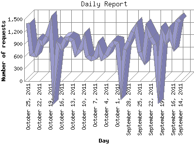

The Daily Report identifies the activity for each day within the reporting period. Remember that one page hit can result in several server requests as the images for each page are loaded.

| Day | Number of requests | Number of page requests | |
|---|---|---|---|
| 1. | September 14, 2011 | 1,498 | 114 |
| 2. | September 15, 2011 | 1,438 | 99 |
| 3. | September 16, 2011 | 910 | 73 |
| 4. | September 17, 2011 | 1,193 | 83 |
| 5. | September 18, 2011 | 995 | 76 |
| 6. | September 19, 2011 | 1,155 | 88 |
| 7. | September 20, 2011 | 0 | 0 |
| 8. | September 21, 2011 | 895 | 71 |
| 9. | September 22, 2011 | 1,054 | 84 |
| 10. | September 23, 2011 | 1,236 | 100 |
| 11. | September 24, 2011 | 539 | 75 |
| 12. | September 25, 2011 | 700 | 57 |
| 13. | September 26, 2011 | 1,318 | 100 |
| 14. | September 27, 2011 | 1,192 | 97 |
| 15. | September 28, 2011 | 966 | 82 |
| 16. | September 29, 2011 | 772 | 71 |
| 17. | September 30, 2011 | 0 | 0 |
| 18. | October 1, 2011 | 917 | 73 |
| 19. | October 2, 2011 | 932 | 66 |
| 20. | October 3, 2011 | 828 | 67 |
| 21. | October 4, 2011 | 619 | 53 |
| 22. | October 5, 2011 | 561 | 51 |
| 23. | October 6, 2011 | 816 | 58 |
| 24. | October 7, 2011 | 574 | 68 |
| 25. | October 8, 2011 | 541 | 70 |
| 26. | October 9, 2011 | 609 | 45 |
| 27. | October 10, 2011 | 1,009 | 82 |
| 28. | October 11, 2011 | 757 | 70 |
| 29. | October 12, 2011 | 671 | 61 |
| 30. | October 13, 2011 | 979 | 68 |
| 31. | October 14, 2011 | 1,031 | 67 |
| 32. | October 15, 2011 | 1,016 | 72 |
| 33. | October 16, 2011 | 821 | 60 |
| 34. | October 17, 2011 | 895 | 76 |
| 35. | October 18, 2011 | 0 | 0 |
| 36. | October 19, 2011 | 1,348 | 96 |
| 37. | October 20, 2011 | 1,073 | 88 |
| 38. | October 21, 2011 | 910 | 68 |
| 39. | October 22, 2011 | 963 | 77 |
| 40. | October 23, 2011 | 636 | 47 |
| 41. | October 24, 2011 | 653 | 67 |
| 42. | October 25, 2011 | 1,403 | 92 |
Most active day February 16, 2011 : 198 pages sent. 1,498 requests handled.
Daily average: 74 pages sent. 933 requests handled.
This report was generated on October 26, 2011 02:36.
Report time frame February 3, 2011 21:33 to October 25, 2011 23:38.
| Web statistics report produced by: analog 5.1 / Report Magic 2.21 |